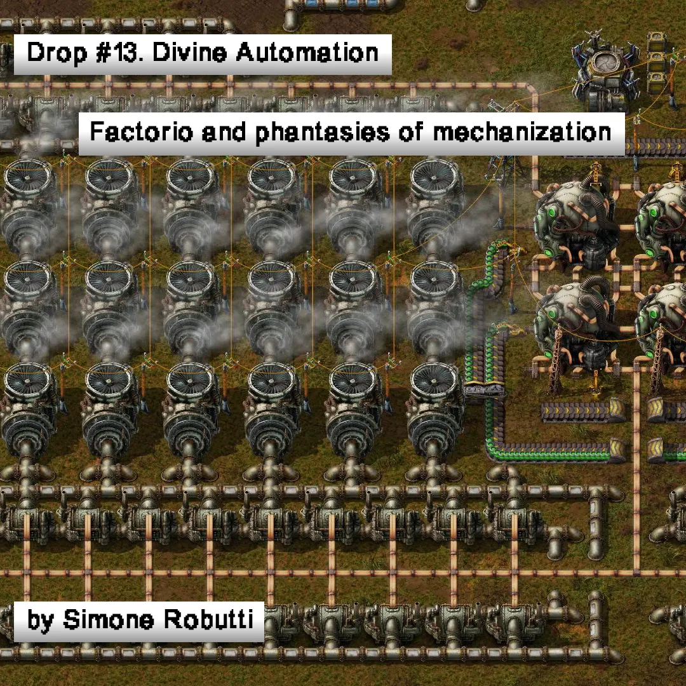
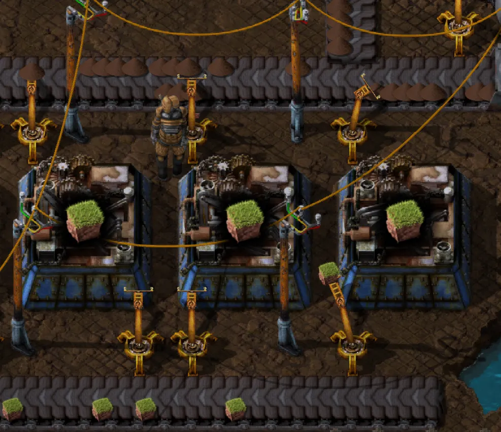
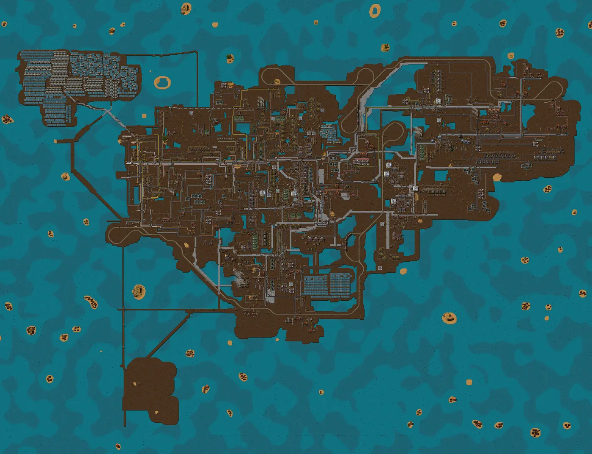
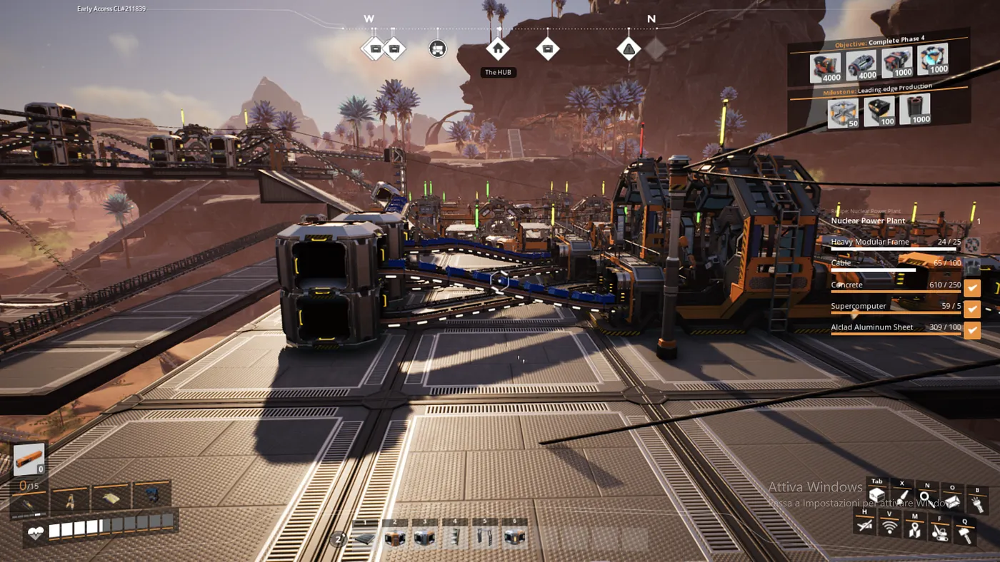
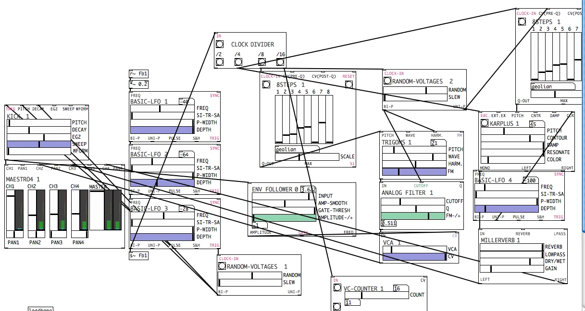
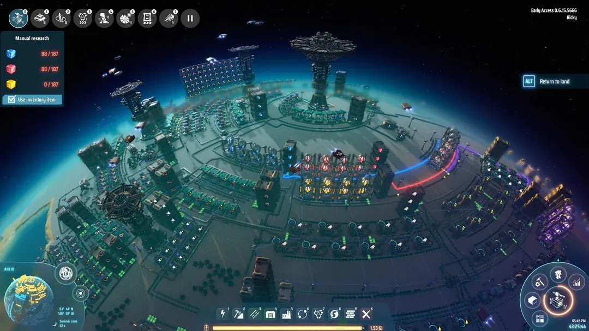
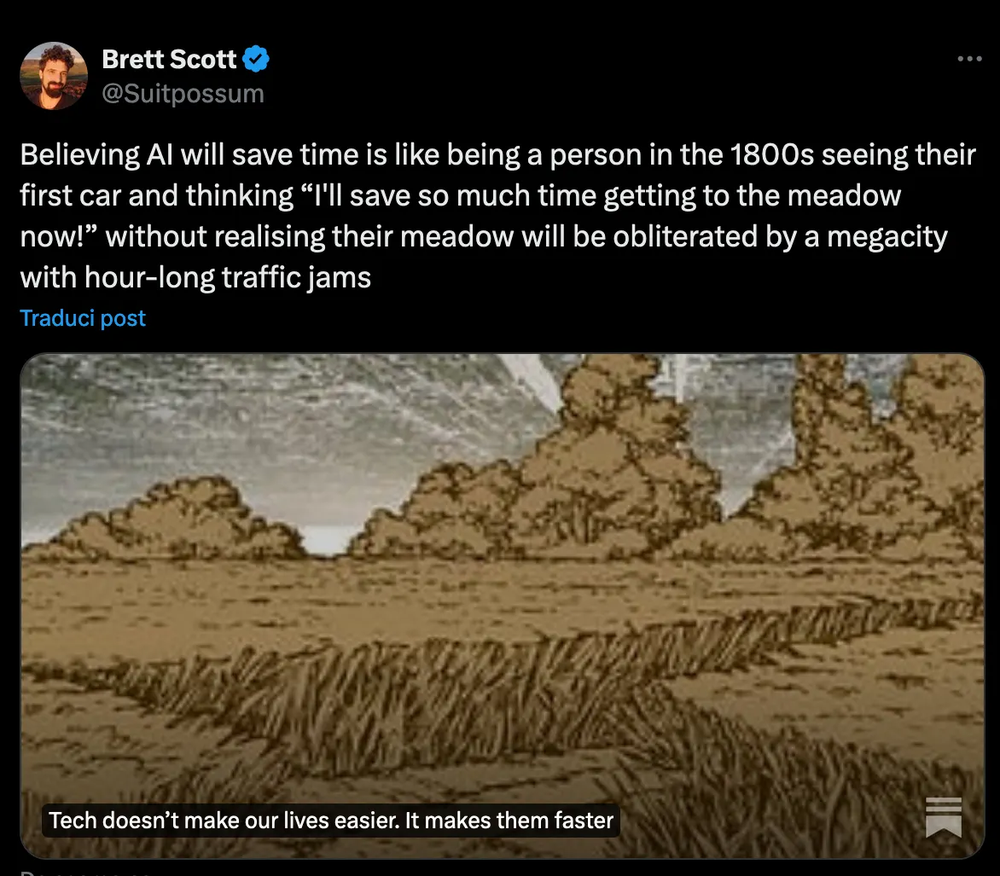
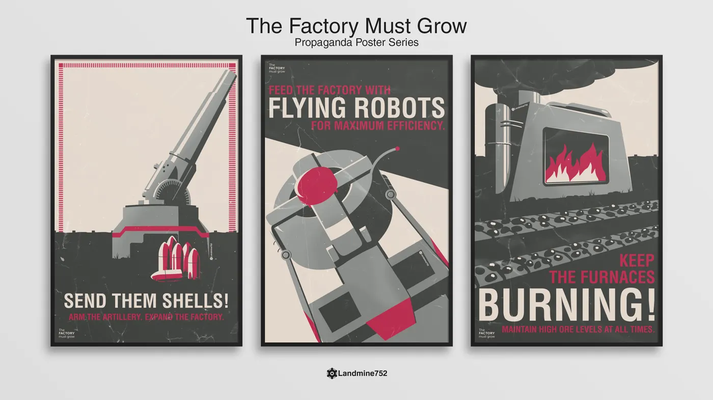

Drop #13 · March 12, 2024 · 12 min read
Factorio and phantasies of mechanization
Hey everyone (▰˘◡˘▰)
A new DROP from our friend Simone Robutti. This time Simone delves into the fairly unknown realm of automation games. What do these simulations of productivity and industriousness unveil about the contemporary dreams of automation? Can we use the sandbox offered in games like Factorio to learn and experiment with organization and process design?
Simone is a knot of flows and occasionally he's a person too. He engages in Tech Unionism, Algorithmic Accountability, Common Cybernetics, and Democratic Organizational Design. He works as a tech lead in AI Forensics, and a consultant/trainer on Organization and Process design. You can find his blog at this link.
If you want to propose an article for this newsletter send an email to reincantamento@gmail.com and consider donating to support our work ^_^
Thanks Adam Baste for becoming a supporter <3

Automation games are a relatively recent development in gaming. Published in 2015, Infinifactory can be considered the first game of the genre. Just one year later, Factorio entered early access, soon to become the most known and successful automation game to date. After that, a wave of titles followed: Satisfactory, Shapez, Autonauts, Dyson Sphere Program, Mindustry, Desynced, and many others.
Taxonomically, automation games sit at the intersection of base-building games and management games, while inheriting several features from puzzle games, programming games, and sometimes survival games.
But what do you do in an automation game? With very few exceptions, all the games obey the same logic: Extract! Automate! Optimize! Grow! FOREVER!
In this article, Factorio will be our focus but its imprinting can be easily tracked across the whole genre.
In Factorio, you play as The Engineer, a faceless (and mostly voiceless) dude who crashes on a hostile planet with a mining pick and little else. His goal is to build a spaceship to get back home. At his disposal, there’s a whole planet rich in iron, copper, coal, and other minerals. So the factory begins to grow. First, you build a mining drill and a forge. Then, you build the first robotic arm and the first transportation belt. The iron starts flowing from the veins to the forge. The coal is extracted by a drill and ends up powering the other drills thanks to many more belts and arms. The machine is alive. Assembling factories are added to the mix and suddenly iron and copper plates are being produced without the help of the Engineer.

Fast-forward 50 hours of play and your factory spans several kilometers, including cargo trains, thousands of robotic arms, nuclear plants, and endless solar panel farms. The drones flow around transporting goods and constantly expanding the factory based on templates that you design and place. You, the Engineer, go around in a giant spider-like vehicle, observing what you achieved. Soon it will be time to go back home. You’re almost sad to leave your creation: every small factory, every engine, every bolt is the result of your design. Everything spawned from your genius. A gigantic organism draining the resources of the planet to keep reproducing itself, expanding in leaps and bounds.
The Engineer must leave not only because he’s homesick. The truth is that on this planet you’re not welcome. There are, in fact, natives, and they are very upset at your pollution. They look like insectoid monsters, coming in different shapes. They regularly attack your base, requiring you to set up automated defense systems, loaded with mass-produced ammo. The more you pollute, the stronger the attacks will become.
Games like Factorio are fun because they allow the players to build a complex moving system that reflects their ideas, preferences, and expertise. They give freedom of creation while binding it to very specific territorial and functional constraints. You have a clear destination, but you’re free to get there the way you prefer. Contrary to other base-building games, automation games tend to create something that looks at the same time grand but familiar to their creator. You can understand the satisfaction of a Brunelleschi in building a cathedral, compressed into a few dozen (hundreds? thousands?) hours of gameplay. You look back at what you’ve created, you witness how it keeps working, and you feel good about it. These games emancipate the players from alienation: they can finally enjoy the fruits of their labor in all its devastating preciseness. Capitalism selling a simulated relief from its intrinsic disease.

The game is unapologetic in its predatory and exploitative setting: players-Engineers invade somebody’s else planet, extracting their resources and wrecking the global environment. The sole response to indigenous claims presented in the game is essentially violence and they are the evil while the player is the hero. Automation games are Frantz Fanon 101: the colonizer demonizing the colonized. It’s impossible to tell if the game is a criticism of Industrial Colonialism or yet another emanation of Western society’s zeitgeist. But analyzing the ideological roots of the exploitative model promoted by this game would be an easy and frankly boring exercise. We should redirect our focus back to automation.
As mentioned above, Factorio is just one example among different automation games: Satisfactory or Desynced follow a very similar premise. Autonauts or Dyson Sphere Program have a more wholesome world-building, while games like Shapez are just fully abstract.
While the setting and world-building differ, they all have something in common: they portray a form of automation that in the real world doesn’t exist and, most likely, will never exist.
When we talk about “automation”, we talk about a lot of different things bundled up together by marketing people, sociologists, engineers, journalists, historians, etc. While this flattening is an understandable move undertaken for clarity, it’s useful to dissect the semantics of the concept.

Automation can be many different, non-overlapping things. It can be a socio-historical process, an economic process, an organizational problem, or an engineering problem. It can pertain to the automation of physical tasks, logical tasks, computational tasks, intellectual tasks, and so-called “creative” tasks. Automation can happen mechanically, or through computational means. It can produce an increase in efficiency, or a decrease in efficiency but a growth in scale. It can increase the quality of the outcome, or it can decrease it. Automation, abstracted from a specific context and a specific discourse, becomes a vague term to identify when machines do “useful” things, usually executing a task or part of a task in place of a human.
Now, with its intrinsic semantic ambiguity, the type of automation we witness represented in games like Factorio is distinct from what we can guess in reality. Let’s try to address the most obvious points step by step.
A first example in Factorio: a lot of actions with moving parts have perfect reproducibility and a 100% success rate. If a robotic arm is positioned to move an engine from a belt to a chest, it will never fail for reasons that are dependent on the arm itself. The arm is perfect in its ability to fulfill its task. This is never the case in reality. Any machine with moving parts manipulating objects in the real world will eventually fail some of its tasks. It doesn’t matter how good it is, or how simple the object to manipulate is. The real world is imperfect, moving parts are flawed, and the task will fail. Anybody working on an assembly line with robotic arms will tell you that it’s a daily, or sometimes hourly occurrence, in which the worker has to unfuck the arm and resume operations. Sometimes, the throughput is even lower than before the arm was introduced.
What about software automation? A computer operation, if the software is written correctly, will always give the same result. Computers are deterministic unless they are programmed not to be. Well, ask any experienced software developer or system administrator if they trust their software. Software always fails, and when it’s mature enough to never fail given the range of possible inputs and states that it’s presented with, then hardware will fail. Hard disks fail all the time and must be replaced. CPUs and other pieces wear down. Radiation will corrupt your memory. It might fail once in a decade, but it will fail. Software that fails so rarely is also considered extremely dangerous: software that works too well might get overlooked, the people with expertise about it will leave the organization and nobody will know what to do when it will, inevitably, fail.

So, perfect reproducibility is not possible in the real world. When a machine encounters a problematic state, it will either fail spectacularly or it will request some form of maintenance. Either way, human intervention is required.
Another tenet of automation games is the ability of machines to execute any task the player can do, beyond obviously some tasks that are precluded to humans themselves. The protagonist is just a designer, eventually replacing any form of manual activity with a refined composition of machines. The human eventually always manages to get out of the productive loop, unless the player has an insane amount of time to waste and wants to play the game without any automation. Not impossible for some titles, but not the most entertaining proposition. In the real world, we have plenty of evidence that this doesn’t happen. Despite the concussive propaganda about generative AI, there is still an endless amount of things that humans can do and machines cannot. A lot of automated tasks, then, are also automatable at the expense of quality, with humans still being required if a high-quality result is expected. No industrial bread can be efficiently produced and taste better than the one produced by the most mediocre of human bakers.

A third element is that automation is somehow resource-efficient: as your need for resources expands, so too does your capacity for automation. The growth in productivity of your machines is always greater than the growth of their costs. In a few words: in the context of the game, automation and progress are always good. It’s the whole premise of the game, otherwise, at some point, you would stop researching and unlocking better machines. You don’t even really need to run an analysis of the performance of the old against the new: you just assume it’s better, and it’s always better.
In the real world, this is often not the case. The introduction of automated processes leads to lock-ins, and dead-ends, very often proving to not be scalable, it has unexpected externalities or a failure rate much higher than older methods. Sometimes these inefficiencies are off-loaded onto people, institutions, and organizations not directly involved in the process to be automated, as it’s the case for negative environmental impacts, social costs, and so on. When you read “externalities”, you should think: “Somebody is being fucked somewhere out there”.
I have highlighted obvious inconsistencies in how automation is portrayed in these games, which are intuitively graspable, I anticipated that most readers have experienced a sense of recognition and familiarity with this "ideal" automation that game designers have transformed into an enjoyable pastime. Somehow, it feels familiar, as if it's an inevitability waiting to unfold.
Well, what we have been talking about so far is exactly the ideology of automation that dominates the propaganda of tech enthusiasts, making newspaper headlines and LinkedIn prophets threads. When the “future of work” is discussed publicly, a world akin to Factorio is imagined, with endless lines of autonomous robots building everything for us. This narrative has been around for centuries now, and yet we are still working (at least) 40 hours per week.

The shiny fully automated factories of the future never ultimately materialize and their prophets, the Bezos and the Musk, still extensively rely on an underpaid workforce, they cut corners on safety, and resort to systematic union busting. Nonetheless, the dream lives on. Phantasies of mechanization are hard to dissolve.
Such utopian visions of automation also exist on the Left, where movements like left-accelerationism (l/acc) for the meme of Fully Automated Gay Space Communism fall prey to the same desire of magical salvation from work.
We could call this “Divine Automation”: a transcendental vision of a self-reproducing and perpetual system; a mechanistic starred sky moving according to an inexhaustible benign force, obedient to the orders of an omniscient designer.
Californian tech bros didn’t spring this intuition from scratch. It has much deeper roots. The illusions of Divine Automation relieve every engineer’s frustrations, including software or robotic engineers: despite the complexity and imperfection of the real world, perfect efficiency can be reached. These games are particularly popular among technical workers, system-oriented people, and neuro-divergent players because they allow a perfect translation of the designer's will into the machinic execution. No setbacks, no unforeseen problems you cannot bypass, no rust, no version incompatibilities, no surprises. The victory of the Rational Mind against the challenges of Complexity, a battle that in the material world is more often than not lost by humans in the long term.
It would be unfair to reduce this game genre to a consolatory experience for frustrated tinkerers, or to a weird entertainment for people with debatable standards and long daily screen time. The major upside of a game world where theory and practice match perfectly is that, well, they are great to learn about theory. Automation games reproduce, consciously or not, several problems of system design, organizational patterns, and informational flows. They are simulated environments in which one can learn and fail without consequences. Mind that these concepts are not just useful for future project managers and process designers. They are relevant for anybody creating an organization, particularly grassroots political organizations. If we agree that system theory, cybernetics, and more specifically organizational sciences investigate phenomena that are relevant for every organization, their insights can be used in every organization, and they apply to every process. Playing automation games gives a less abstract and less complex vocabulary to reason about the systems we are immersed in: from our workplace to our home, from our political collective to the State. By playing, you teach your brain to detect patterns happening everywhere and you learn how to act on them to achieve your goals.

I dream of a future where endless, meaningless, factories grow in digital worlds, keeping sociopathic nerds like Musk busy and appeased, whos of their virtual hills. They share these worlds with well-meaning students of Complexity, who will eventually leave their safe bubble to venture into the world to reshape it. Their grand theories of economic growth will be confined to ritualized games, as relics of a distant past. Outside, machines are used to efficiently produce only what is needed. System theory is studied to do more with less. Engineering mutates into a science of naptime maximization. The Factory Must Grow; The Planet Must Heal!